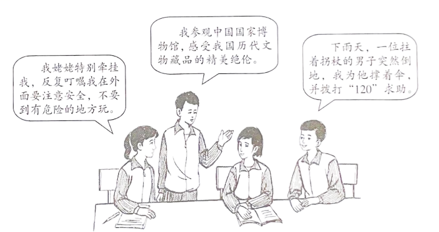

2023年北京中考道德与法治 第17题 解析
17. 某班同学围绕“生命”的话题展开讨论。

运用生命的相关知识，谈谈上述情境给你的启示。
【答案】生命至上，尊重和敬畏生命。爱护身体，增强安全意识。养护精神，充盈精神世界。关切他人生命，善待他人。
【解析】
【分析】考点考查：生命的相关知识。
能力考查：运用所学知识分析材料，解答问题的能力。
核心素养：健全人格。
【详解】第一步：审设问，明确主体、作答范围及作答角度。
本题的设问主体为公民， 需要运用生命的有关知识，从启示类习题的角度进行作答。
第二步：审材料，提取关键词，链接教材知识。
关键词①：不要到有危险的地方玩→可链接生命至上，尊重和敬畏生命，增强安全意识；
关键词②：参观博物馆→可链接养护精神，充盈精神世界；
关键词③：为他撑伞、拨打120求助→可链接关切他人生命，善待他人；
第三步：整合信息，组织答案。